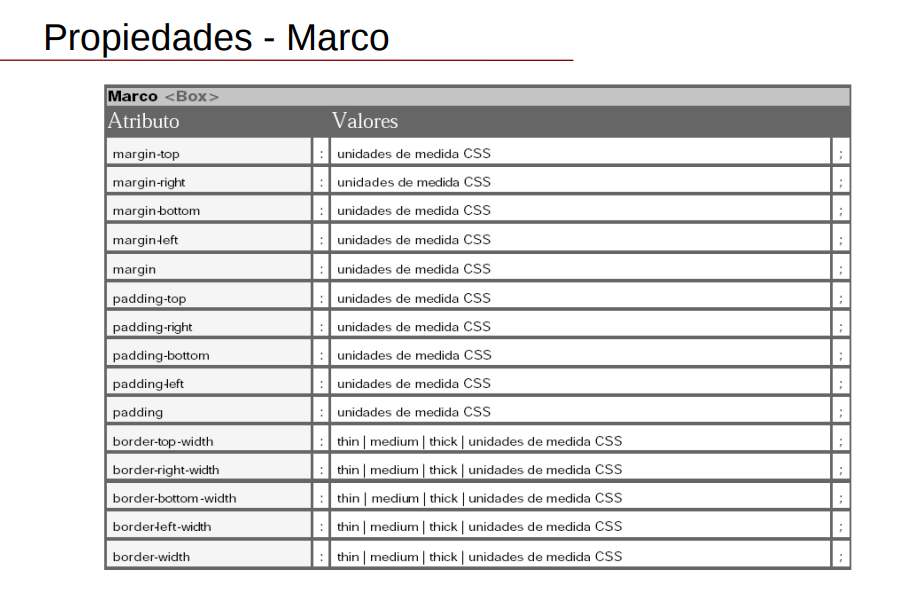
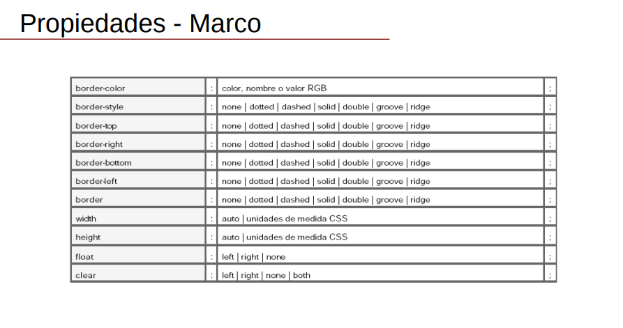

MARCO
Permite agregar un margen a la pagina y controlar las propiedades de este, desde su altura y posicion, su ancho e incluso controlar la medida independiente de cada lado de margen, tambien se puede dar un color.

